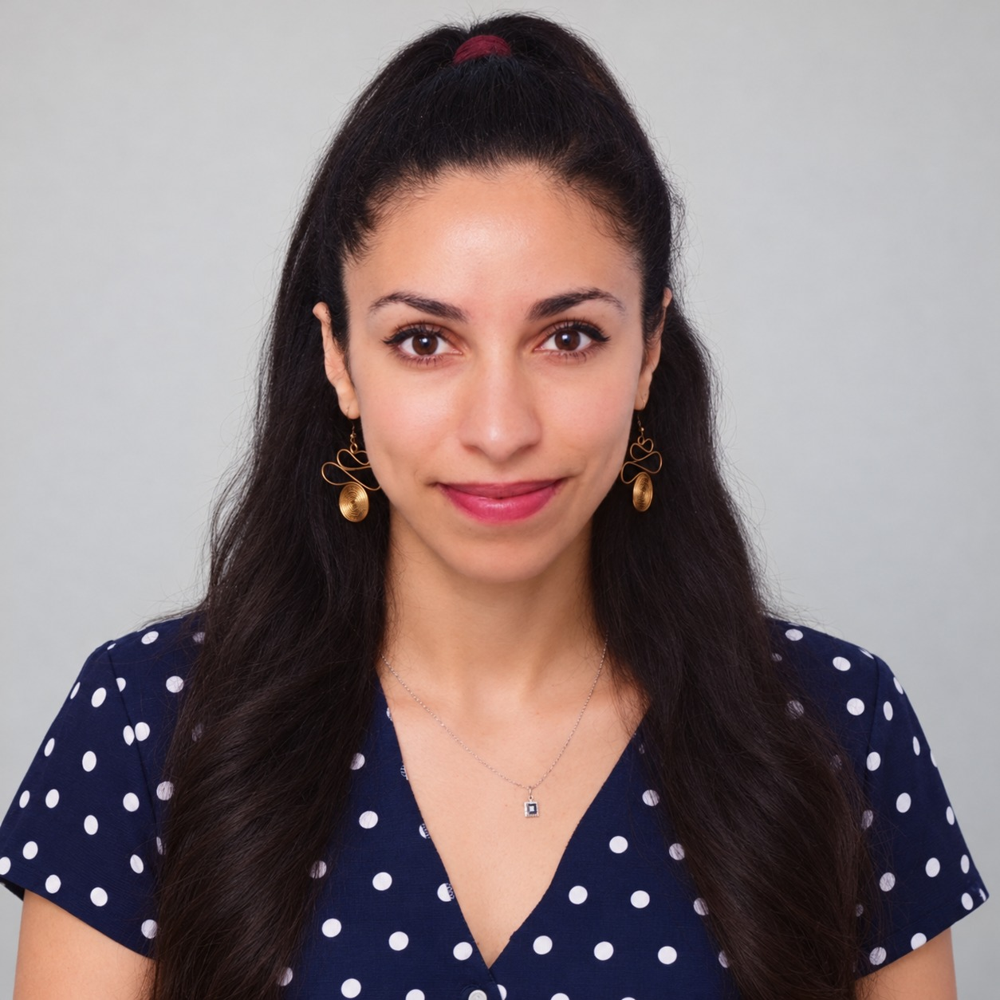

2024 — aujourd’hui
Doctorat en physique
Université Chouaïb Doukkali, El Jadida
Optimisation hybride des paramètres expérimentaux en météorologie spatiale par machine learning.
Rabat / El Jadida, Maroc
Doctorante en physique, enseignante et coordinatrice scientifique. J’allie recherche, pédagogie et organisation pour faire avancer les idées — et les personnes qui les portent.

Recherche
& transmission
PHYSIQUE • PÉDAGOGIE • ESPACE
2026
( À PROPOS )
UNE APPROCHE TRANSVERSALE
Mon travail évolue au croisement de la physique, de l’enseignement et de la coordination. Aujourd’hui doctorante, je transforme des sujets complexes en expériences d’apprentissage claires, tout en contribuant à des projets scientifiques collectifs.
( PARCOURS )
APPRENDRE, CHERCHER, PARTAGER
Université Chouaïb Doukkali, El Jadida
Optimisation hybride des paramètres expérimentaux en météorologie spatiale par machine learning.
Faculté des Sciences, El Jadida
TP d’optique et de physique atomique, méthodes d’optimisation numérique avec Python et co-encadrement d’un projet de Master.
Club Astro-Nuts, Université Ibn Tofaïl
Pilotage d’un club, ateliers, nuits d’observation et événements de vulgarisation scientifique.
Université Ibn Tofaïl, Kénitra
Un socle interdisciplinaire entre sciences physiques, données et outils numériques.
( EXPERTISE )
COMPÉTENCES CLÉS
Optique, physique atomique, mécanique, énergétique et optimisation numérique. Une pédagogie attentive aux besoins de chaque apprenant.
Météorologie spatiale, analyse ionosphérique et traitement de données, avec une attention portée aux méthodes d’intelligence artificielle.
Organisation d’événements scientifiques, gestion associative et médiation pour rendre la science plus ouverte et accessible.
( RECONNAISSANCE )
DES ÉTAPES QUI COMPTENT
COMMUNICATION ORALE
Politecnico di Milano, Italie
2025
Bodø, Norvège
2025
Poster : réponse ionosphérique à la tempête géomagnétique de mars 2015.
2026
Environnement, instrumentation et impact sur les systèmes spatiaux.
( CONTACT )
UNE IDÉE, UN PROJET, UNE COLLABORATION ?
Pour une collaboration pédagogique, scientifique ou associative, je serais ravie d’échanger avec vous.
nouhaila.bouhadi@gmail.com ↗